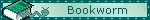
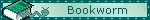
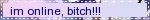
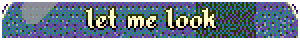
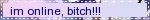
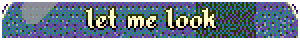

da blinkies
ever try to distill your essence into a collection of blinking images?


 



 




An unexpected error occurred
Both of them speak of something that is gone:
The Pansy at my feet
Doth the same tale repeat:
Whither is fled the visionary gleam?
Where is it now, the glory and the dream?